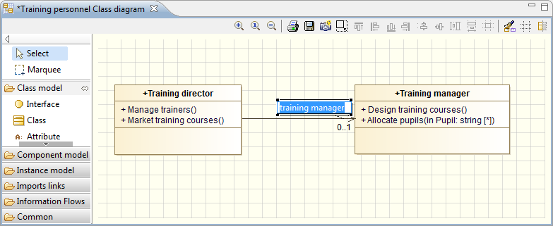

Simple links with no intermediate points can be moved by clicking on the link, holding down the left mouse button, moving the link to the desired new position and releasing the mouse button.
For links with one or more intermediate points, you can move each individual part of the link.
To move a link end or an intermediate point, simply left-click on the corresponding point which you wish to move, and drag it to the new position. When you release the left mouse button, the link end (or intermediate point) is repositioned.
When moving a link end, additional intermediate points can be added to a link in the usual way (by left-clicking).
Note: If you try to move a link end to an unauthorized position, the concerned element will be highlighted in red.
If you want to redraw a link, you have two ways of activating the “Redraw link” command:
The graphic representation of the link then disappears, leaving you free to redraw the path of the link as you wish.
If you want to enter or modify values for a link, you can do this directly in the diagram by pressing F2 or double-clicking on a label.

Link values can also be entered or changed in the Element view on the link.